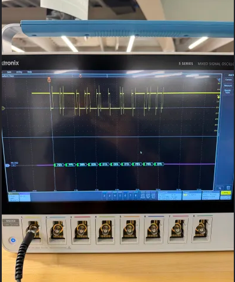
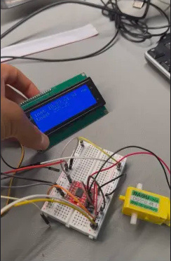
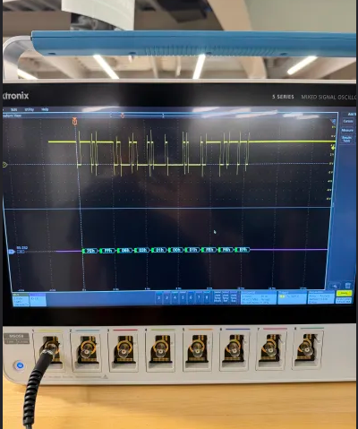
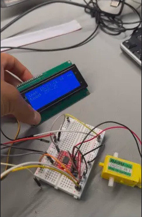

Overview
Travis Bot is a Travis Scott-themed robot that combines 3D printing, electronics, and programming. The project features a custom 3D printed and painted Travis Scott head mounted on a remote-controlled car platform, all controlled by a Raspberry Pi connected to an Xbox Controller.
Technologies Used
Features
- Custom 3D printed Travis Scott head with detailed painting
- Remote control via Xbox Controller for intuitive operation
- Raspberry Pi-based control system for flexible programming
- Motor control for smooth movement and maneuverability
- Integration of multiple systems (mechanical, electrical, software)
Design Process
The project started with modeling and 3D printing the Travis Scott head, which required careful design to ensure it was both recognizable and structurally sound. After printing, the head was painted with attention to detail to capture the likeness.
The electronics integration involved connecting the Raspberry Pi to motor drivers for the car's movement system. Programming the Xbox Controller input to control the motors required understanding of GPIO pins and controller communication protocols.
The final assembly brought together the mechanical structure, electrical components, and software control into a cohesive, functional robot.
Key Learnings
- 3D modeling and printing techniques for custom designs
- Integration of hardware and software systems
- Raspberry Pi programming and GPIO control
- Motor control and robotics fundamentals
- Problem-solving through iterative design and testing
Demo Video
Project Images
 



Future Improvements
Potential enhancements for Travis Bot include:
- Adding autonomous navigation capabilities
- Integrating sensors for obstacle detection
- Adding audio playback functionality
- Implementing computer vision for object tracking
- Developing a mobile app for wireless control